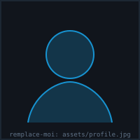

___ ___ ___ _____ ___ ___ _ ___ ___ | _ \/ _ \| _ \_ _| __/ _ \| | |_ _/ _ \ | _/ (_) | / | | | _| (_) | |__ | | (_) | |_| \___/|_|_\ |_| |_| \___/|____|___\___/
visitor@portfolio ~$ cat about.md
Welcome to my terminal. I'm a cybersecurity student finishing my engineering degree, aiming to join a security team as an engineer. I'm particularly interested in three complementary areas:
Offensive security — web and infrastructure pentesting, vulnerability exploitation, lateral movement, red teaming. I enjoy understanding a system by trying to break it cleanly, with a reproducible and documented methodology.
Defensive security — intrusion detection, log analysis, system and network hardening, incident response. Understanding the attack to detect it better, and vice versa.
DevSecOps — integrating security into CI/CD pipelines: dependency scanning, automated SAST/DAST, secrets management, secure infrastructure-as-code from the design stage ("shift left").
My working methodology on a challenge or project always follows the same thread: thorough recon, methodical enumeration, hypothesis formulation, controlled exploitation, then complete documentation — that last step is what feeds the writeups section of this site.
────────────────────────────────────────────────────────────────
visitor@portfolio ~$ cat education.txt certifications.txt
// replace these lines with your real background in index.html
────────────────────────────────────────────────────────────────
_ ___ ___ ___ _ _ _ _ /_\ | _ \/ __| __| \| | /_\ | | / _ \| /\__ \ _|| .` |/ _ \| |__ /_/ \_\_|_\|___/___|_|\_/_/ \_\____|
Tools and technologies I use day to day, sorted by domain.
visitor@portfolio ~$ sudo pacman -S offensive-toolkit
loading...
visitor@portfolio ~$ sudo pacman -S defensive-toolkit
loading...
visitor@portfolio ~$ sudo pacman -S devsecops-toolkit
loading...
────────────────────────────────────────────────────────────────
visitor@portfolio ~$ systemctl status portfolio.target
────────────────────────────────────────────────────────────────
visitor@portfolio ~$ ./contact.sh --connect
___ ___ _ _ _____ _ ___ _____ / __/ _ \| \| |_ _/_\ / __|_ _| | (_| (_) | .` | | |/ _ \ (__ | | \___\___/|_|\_| |_/_/ \_\___| |_|

visitor@portfolio ~$ █